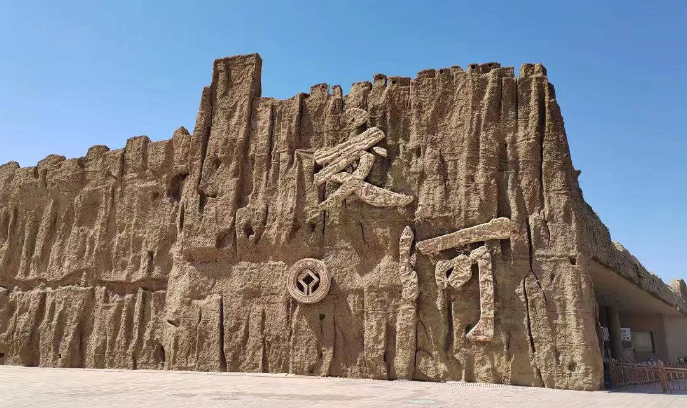

传奇：交河故城位于新疆维吾尔自治区吐鲁番市西约10公里的雅尔乃孜沟中，是世界上最大、最古老、保存最完好的生土建筑城市，也是中国保存最完整的都市遗址。故城建于公元前2世纪至公元14世纪，距今已有2300多年历史。因两条河水绕城相交，故名"交河"。故城南北长约1650米，东西最宽处约300米，总面积47万平方米，建筑面积22万平方米。全城为柳叶形台地，四周为深约30米的河谷，形成天然屏障。故城是古代西域三十六国之一"车师前国"的都城，唐代为安西都护府治所，是丝绸之路上的重要城镇。13世纪末，因战乱和自然环境恶化，交河逐渐废弃。1961年，交河故城被列为全国重点文物保护单位。2014年，交河故城作为"丝绸之路：长安-天山廊道的路网"的重要组成部分，被联合国教科文组织列入《世界文化遗产名录》。
核心看点：
游览攻略：
交通信息：交河故城位于吐鲁番市西约10公里。从吐鲁番市区出发：①旅游专线：吐鲁番客运站有旅游专线车到交河故城，车程20分钟；②出租车：从市区打车约30元，车程15分钟；③自驾：有停车场。从乌鲁木齐出发：可乘动车到吐鲁番北站（1小时），再转乘出租车。景区内有电瓶车。周边景点有高昌故城（40公里）、柏孜克里克千佛洞（15公里）、火焰山（30公里）、葡萄沟（20公里）。距吐鲁番交河机场15公里，车程20分钟；距吐鲁番北站12公里，车程15分钟。建议与高昌故城、柏孜克里克千佛洞、火焰山组合游览。
车师前国：车师是古代西域民族，分前、后两部。车师前国都城在交河，车师后国都城在务涂谷（今吉木萨尔）。车师前国存在于公元前2世纪至公元5世纪，是西域三十六国之一。其疆域包括今吐鲁番盆地，是丝绸之路北道的重要国家。车师人以农业为主，兼营畜牧业，有冶铁、制陶等手工业。车师前国与汉朝时战时和，公元前108年，汉将赵破奴攻破车师。公元前60年，西汉设西域都护府，车师前国归附。
高昌郡时期：公元327年，前凉设高昌郡，治所高昌城，交河为高昌郡属县。此后，前秦、后凉、西凉、北凉相继统治。这一时期，中原政权加强对西域的统治，汉族移民增多，汉文化影响加深。佛教在交河兴盛，修建了许多佛寺。
麹氏高昌时期：公元460年，柔然灭北凉，立阚伯周为高昌王。公元499年，麹嘉建立麹氏高昌王国，都高昌城，交河为重要城镇。麹氏高昌存在140年，是吐鲁番历史上的繁荣时期。佛教达到鼎盛，交河佛寺增多，成为佛教中心。
唐代时期：公元640年，唐太宗灭高昌，设西州，后设安西都护府，治所交河。交河成为唐朝经营西域的政治、军事、经济中心。唐代是交河最繁荣的时期，城市规模扩大，建筑增多，文化繁荣。许多中原僧人经交河西行求法，许多西域僧人经交河东来传教。
回鹘时期：公元840年，回鹘汗国灭亡，部分回鹘人西迁至高昌，建立高昌回鹘王国。回鹘人信仰佛教，交河佛教继续发展。但交河的地位逐渐被高昌取代，开始衰落。
废弃原因：13世纪末，交河逐渐废弃。原因有：①战乱：蒙古西征，战争破坏；②环境：气候变化，水源减少；③经济：丝绸之路改道，贸易衰落；④政治：政治中心转移。交河废弃后，逐渐被风沙掩埋，保存至今。
选址特点：交河故城的选址极具智慧。①地形：建于柳叶形台地上，高出河谷30米，易守难攻；②水源：两条河水绕城，提供水源；③防御：四周为深谷，形成天然屏障；④交通：位于丝绸之路要道。选址体现了军事防御与生活便利的结合。
城市规划：故城规划严谨。①布局：沿中央大道分为东、西两区，功能分区明确；②道路：有主干道、次干道、巷道，形成网状道路系统；③防御：有城墙、城门、瓮城、角楼等防御设施；④排水：有明沟、暗渠排水系统。规划体现了古代城市的建设水平。
建筑技术：故城建筑技术独特。①生土建筑：在原生土中挖出房屋，或用于夯土砌墙；②减地法：从地面向下挖掘，留出墙体，形成房屋；③夯土技术：用夯土筑墙，坚固耐久；④木结构：用木材做梁、柱、门窗。技术适应了当地干旱少雨的气候。
建筑类型：故城建筑类型丰富。①官署：衙署、军营、监狱等；②宗教：佛寺、佛塔、佛堂等；③民居：地穴式、半地穴式、地面式等；④手工业：作坊、窑炉、仓库等；⑤公共：广场、道路、水井等。类型反映了城市的多功能。
防御体系：故城有完整的防御体系。①城墙：沿台地边缘筑墙，高5-10米；②城门：只有南门一个地面入口；③瓮城：南门外有瓮城，增强防御；④角楼：城墙转角有角楼，用于瞭望；⑤暗道：有秘密通道通往河谷。防御体系使交河易守难攻。
建筑材料：故城主要用本地材料。①土：用原生土、夯土；②木：用胡杨、柳木、榆木；③草：用麦草、芦苇做筋；④石：少量用石材。材料简单，但经久耐用。
佛教文化：交河是佛教传播的重要中心。①传入：公元前后，佛教经丝绸之路传入交河；②发展：魏晋南北朝至唐代，佛教兴盛，寺院众多；③艺术：佛教艺术融合了犍陀罗、中原、西域风格；④高僧：许多高僧在交河驻锡、译经。佛教对交河文化有深远影响。
多元民族：交河是多民族聚居地。①原住民：车师人，属印欧人种；②汉族：汉代开始移民，唐代增多；③突厥：突厥、回鹘等民族；④其他：粟特、波斯、印度等民族。多民族共同创造了交河文明。
语言文字：交河使用多种语言文字。①汉语：官方语言，用于公文、碑刻；②车师语：当地民族语言；③粟特文：粟特商人使用的文字；④梵文：佛教经典使用的文字；⑤回鹘文：回鹘人使用的文字。语言文字反映了文化交流。
艺术成就：交河有丰富的艺术遗存。①建筑艺术：生土建筑独具特色；②雕塑艺术：佛像、菩萨像等；③壁画艺术：佛寺壁画，色彩鲜艳；④工艺品：陶器、金属器、纺织品等。艺术体现了东西方风格的融合。
经济生活：交河经济以农业、手工业、商业为主。①农业：种植小麦、大麦、葡萄等；②手工业：冶铁、制陶、纺织、酿酒等；③商业：丝绸之路贸易，东西方商品集散。经济繁荣支撑了城市发展。
科学技术：交河有一定科技水平。①建筑技术：生土建筑技术先进；②水利技术：引水灌溉，打井取水；③冶炼技术：冶铁技术成熟；④天文历法：使用多种历法。科技适应了当地环境。
历史价值：交河故城是丝绸之路历史的见证。①城市史：保存最完整的古代都市遗址；②建筑史：生土建筑的杰出代表；③民族史：多民族交流融合的实证；④宗教史：佛教传播的重要中心。故城是历史的"活化石"。
科学价值：交河故城蕴含丰富的科学技术。①建筑科学：生土建筑技术，适应干旱环境；②规划科学：城市规划，功能分区；③材料科学：土、木等材料的应用；④环境科学：选址、布局的环境适应性。故城是古代科技的结晶。
艺术价值：交河故城是艺术的宝库。①建筑艺术：城市布局、建筑造型独特；②雕塑艺术：佛像、装饰雕塑精美；③壁画艺术：佛寺壁画色彩鲜艳；④整体艺术：遗址与环境的和谐统一。故城是"石头的史书"。
文化价值：交河故城是多元文化的载体。①佛教文化：佛教建筑的集中体现；②丝路文化：东西方文化交流的实证；③民族文化：多民族文化融合的典范；④地域文化：西域绿洲文化的代表。故城是文化交融的结晶。
旅游价值：交河故城是重要的旅游景点。①景观价值：遗址壮观，环境独特；②文化价值：丝路文化吸引游客；③教育价值：是历史、考古教育的基地；④经济价值：带动地方旅游经济发展。故城是吐鲁番旅游的"金字招牌"。
保护与传承：交河故城得到科学保护。①法律保护：1961年列为全国重点文物保护单位，2014年列入《世界遗产名录》；②规划保护：编制保护规划，划定保护区；③工程保护：对危岩体加固，对遗址进行保护；④研究展示：开展考古研究，建立博物馆；⑤合理利用：发展文化旅游，让遗产"活"起来；⑥社区参与：当地群众参与保护，分享旅游收益。交河故城的保护经验，为土遗址保护提供了成功范例。